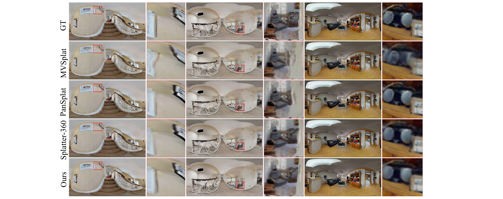
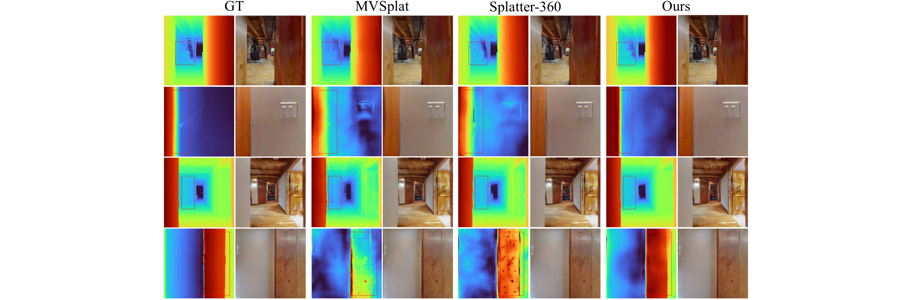

360-GeoGS
简单摘要
传统的多视图立体与稀疏视点或低纹理区域作斗争，而神经渲染方法虽然能够产生高质量的结果。显式 3D 高斯泼溅 (3DGS) 可实现高效渲染，但大多数前馈变体侧重于视觉质量而不是几何一致性。
为了应对这些挑战，我们提出了 360-GeoGS，这是一种用于 360 度图像输入的前馈 3DGS 框架，其中包含深度法线 (D-Normal) 正则化。该框架从 360 度图像中预测多视图深度并融合各种特征，然后由 U-Net 处理以回归像素对齐的高斯基元。
核心创新
第一，本文提出了一种新颖的 360 度图像前馈 3DGS 框架，能够生成几何一致的高斯图元，同时保持高渲染质量。
第二，引入深度法线几何正则化，将渲染的深度梯度与法线信息结合起来，监督高斯旋转、缩放和位置，以提高点云和表面精度。
第三，部分介绍了整体架构，部分详细介绍了前馈预测管道，部分介绍了所提出的强制几何一致性的 D-Normal 约束。
技术细节
我们的目标是直接从 360 个图像输入中预测 3DGS 参数，从而以前馈方式实现几何一致的场景重建。重建首先提取多视图匹配特征来构建球形成本体积，然后将其用于估计初始密集深度图作为几何先验。具体来说，首先聚合高级特征以形成全局条件表示。

3.1 框架概述
我们的网络采用前馈设计，将 360 度图像映射到 3D 高斯基元。重建首先提取多视图匹配特征来构建球形成本体积，然后将其用于估计初始密集深度图作为几何先验。同时，通过特征线性调制（FiLM）提取和调制多尺度特征，以实现跨尺度交互。
3.2 前馈 3DGS 预测流程
3.2.1 特征编码
我们采用 360Recon 框架作为球形输入特征提取的基准。SphereCNN 主干用于从 360 个图像中获取匹配特征，这些特征用于构造球形成本体积并估计初始密集深度图作为几何先验。具体来说，首先聚合高级特征以形成全局条件表示。
3.2.2 3DGS 参数预测
融合后的特征由 U-Net 解码器解码以产生初始高斯基元参数，然后通过适配器模块对其进行细化以实现渲染兼容性。适配器标准化旋转，调整深度比例，并转换球谐系数以产生与输入全景图对齐的全分辨率 (512×1024) 的每像素高斯基元。网络预测图像空间中的每像素偏移，将其与深度相结合，将点投影到 3D 相机坐标中，并使用相机到世界矩阵进一步转换为世界坐标。
3.3 几何约束
从方法链路看，系统首先处理的是：为了提高前馈 3DGS 预测的几何精度并更好地将高斯点与物体表面对齐，我们引入了几何约束。
3.3.1 法向深度和交叉深度
前馈 3DGS 点的空间位置主要取决于估计的深度，理论上预计位于物体表面。然而，由于高斯被表示为椭球体，因此它们的中心常常偏离真实表面，导致几何不一致。为了解决这个问题，我们遵循 NeuSG 并将每个椭球沿着其最小尺度方向压缩为高度扁平的形式，从而使高斯更好地粘附到底层表面。
3.3.2 D-正态正则化
具体来说，深度图是使用 3DGS 渲染器生成的，遵循类似于 RGB 渲染的过程。随后，通过计算深度图沿水平和垂直方向的有限差并取它们的叉积来获得渲染法线。D-Normal 正则化强制渲染法线与目标法线之间的一致性，从而实现高斯位置和方向的联合优化，如图 2 所示。
$$ C_{\mathrm{cond}} = \Phi(\{ F_i \}_{i=2}^{4} ), $$
这条式子给出了论文中的一条核心计算关系。理解时重点看左侧最终输出是什么，以及右侧各部分分别承担什么作用。
$$ \hat{F} = \gamma(C_{\mathrm{cond}}) \cdot F + \beta(C_{\mathrm{cond}}), $$
这条式子是在定义一个可直接计算的中间量：右侧把相对位置、方向、权重或比例关系组合起来，左侧则把这个组合结果记成后续模块要反复使用的变量。
$$ \Sigma = R(\theta)^T \text{diag}(s) R(\theta), $$
这条式子给出了论文中的一条核心计算关系。理解时重点看左侧最终输出是什么，以及右侧各部分分别承担什么作用。
$$ \mathcal{L}_\mathrm{s}=\|\min(s_1,s_2,s_3)\|_1. $$
这条式子给出了训练阶段的优化目标。阅读时可以先看左侧到底在约束什么，再区分右侧每一项对应的是重建误差、正则项还是辅助监督。
$$ \mathbf{d}(\mathbf{n},\mathbf{p})={r_z(\mathbf{n}\cdot \mathbf{p})}/{(\mathbf{n}\cdot \mathbf{r})}, $$
这条式子是在定义一个可直接计算的中间量：右侧把相对位置、方向、权重或比例关系组合起来，左侧则把这个组合结果记成后续模块要反复使用的变量。
$$ \hat{D}={\sum_{i\in M} d_i\,\alpha_i\, T_i}/({\sum_{i\in M} \alpha_i\, T_i}) \qquad\quad T_i=\prod_{j=1}^{i-1}(1-\alpha_j) $$
这条式子描述了多个分量的聚合或逐步合成过程。它通常表示模型如何把局部贡献、概率权重或多项损失累积成最终结果。
$$ \bar{\mathbf{N}}_{d}(\mathbf{n},\mathbf{p})=\frac{\nabla_{v}\mathbf{d}(\mathbf{n},\mathbf{p})\times\nabla_{h}\mathbf{d}(\mathbf{n},\mathbf{p})}{|\nabla_{v}\mathbf{d}(\mathbf{n},\mathbf{p})\times\nabla_{h}\mathbf{d}(\mathbf{n},\mathbf{p})|}. $$
这条式子是在定义一个可直接计算的中间量：右侧把相对位置、方向、权重或比例关系组合起来，左侧则把这个组合结果记成后续模块要反复使用的变量。
$$ \mathcal{L}_{\mathrm{dn}}=\|\bar{\mathbf{N}}_{d}-\mathbf{N}\|_{1}+(1-\bar{\mathbf{N}}_{d}\cdot\mathbf{N}). $$
这条式子是在定义一个可直接计算的中间量：右侧把相对位置、方向、权重或比例关系组合起来，左侧则把这个组合结果记成后续模块要反复使用的变量。
实验结论
实验部分主要围绕 数据集和指标我们在两个全景数据集 HM3D 和 Replica 上评估我们的模型，其中包含不同的室内场景 展开。结果表明，我们使用标准指标（包括 PSNR、SSIM 和 LPIPS）评估所有方法在新颖视图合成方面的性能，以及使用 Abs Diff、Abs Rel、RMSE 和 进行深度预测的性能。
| Method | HM3D | Replica | ||||||
|---|---|---|---|---|---|---|---|---|
| (lr)2-5 (lr)5-9 | Abs Diff | Abs Rel | RMSE | < 1.25 | Abs Diff | Abs Rel | RMSE | < 1.25 |
| MVSplat^ | 0.140 | 0.094 | 0.258 | 91.150 | 0.186 | 0.111 | 0.282 | 88.216 |
| Splatter-360 | 0.098 | 0.068 | 0.193 | 95.417 | 0.103 | 0.068 | 0.185 | 95.412 |
| Ours | 0.053 | 0.069 | 0.141 | 96.423 | 0.055 | 0.068 | 0.138 | 96.528 |
| Method | HM3D | Replica | ||||
|---|---|---|---|---|---|---|
| (lr)2-4 (lr)5-7 | PSNR | SSIM | LPIPS | PSNR | SSIM | LPIPS |
| MVSplat^ | 29.537 | 0.892 | 0.138 | 28.682 | 0.915 | 0.117 |
| PanSplat | 29.733 | 0.925 | 0.126 | 31.821 | 0.960 | 0.067 |
| Splatter-360 | 31.669 | 0.925 | 0.100 | 31.584 | 0.952 | 0.064 |
| Ours | 31.043 | 0.920 | 0.098 | 31.137 | 0.945 | 0.066 |


4.1 实施细节
实验部分主要围绕 我们的方法在 PyTorch 中实现，使用自定义 CUDA 内核加速交叉距离计算 展开。结果表明，所有实验均在具有 80 GB VRAM 的单个 NVIDIA A100 GPU 上进行。
4.2 数据集和指标
实验部分主要围绕 我们在两个全景数据集 HM3D 和 Replica 上评估我们的模型，其中包含不同的室内场景 展开。结果表明，为了进行定量比较，我们将我们的方法与几种最先进的 360 度方法进行比较，包括 Splatter-360 和 PanSplat。
4.3 定性结果
实验部分主要围绕 MVSplat 表现出明显的深度错误，例如样本 2 中门的左边缘，而 Splatter-360 改进了整体重建，但在样本 2 和 4 中仍然表现出有限的表面深度一致性 展开。结果表明，相比之下，我们的方法生成的深度预测具有更强的几何一致性和更高的准确性。
4.4 定量结果
实验部分主要围绕 如表和表所示，我们的方法在几何重建和深度估计指标方面优于 Splatter-360 展开。结果表明，表报告了新颖的视图合成指标，其中我们的方法实现了与当前最先进技术相当的渲染质量，并且多个指标之间存在微小差异。
4.5 消融结果
实验部分主要围绕 我们进行了消融研究，以评估 D-Normal (D-N)、尺度扁平化 (Scales) 和多尺度特征融合 (Fusion) 的贡献 展开。结果表明，如表所示，完整模型在渲染、深度和几何重建指标方面始终优于消融变体。
理解评价
如果把这篇论文放回问题背景里看，它真正的价值在于：传统的多视图立体与稀疏视点或低纹理区域作斗争，而神经渲染方法虽然能够产生高质量的结果，但需要每个场景的优化并且缺乏实时效率。这说明作者不是只补一个局部模块，而是在重新组织问题该怎样被解决。
最能支撑这个判断的，还是实验给出的证据：显式 3D 高斯分布 (3DGS) 可实现高效渲染，但大多数前馈变体侧重于视觉质量而不是几何一致性，从而限制了空间感知任务中的精确表面重建和整体可靠性。换句话说，这些设计并不只是概念上更完整，而是实实在在改变了最终结果。
当然，它离真正成熟的方案还有距离：当前方案的局限在于它仍然受制于计算资源、输入质量或场景复杂度，距离真正稳健的大规模部署还有差距。后续更值得继续推进的方向，是 未来的工作将探索 360 度图像的无姿态重建，并研究是否可以恢复遮挡区域。